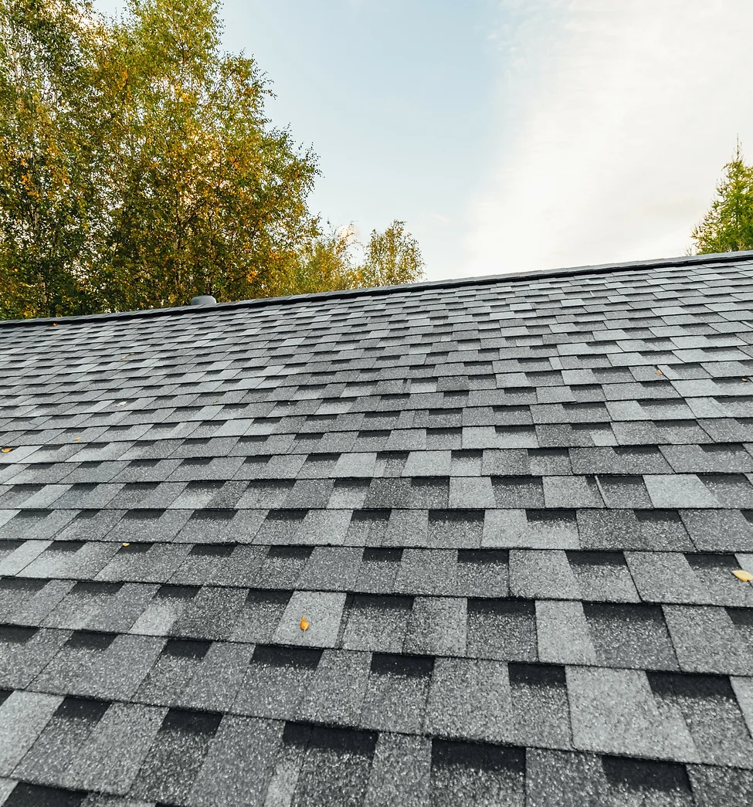
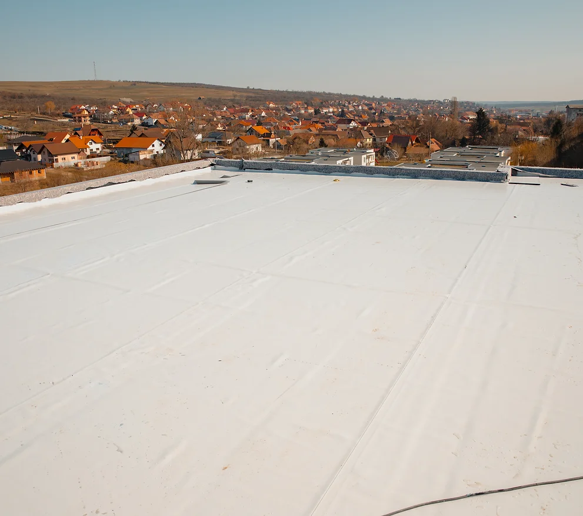
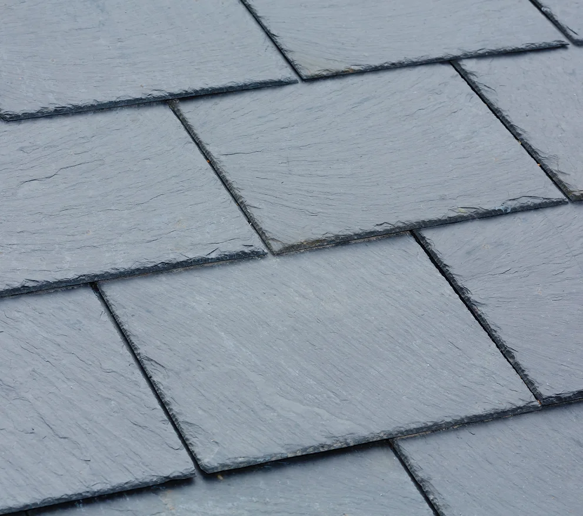
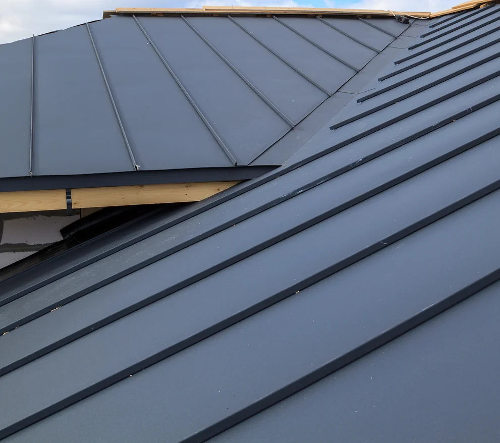

<!DOCTYPE html>
<html lang="en">
<head>
    <!-- Google Tag Manager -->
<script>(function(w,d,s,l,i){w[l]=w[l]||[];w[l].push({'gtm.start':
new Date().getTime(),event:'gtm.js'});var f=d.getElementsByTagName(s)[0],
j=d.createElement(s),dl=l!='dataLayer'?'&l='+l:'';j.async=true;j.src=
'https://www.googletagmanager.com/gtm.js?id='+i+dl;f.parentNode.insertBefore(j,f);
})(window,document,'script','dataLayer','GTM-PRZKVW8L');</script>
<!-- End Google Tag Manager -->
    <meta charset="UTF-8">
    <meta name="viewport" content="width=device-width, initial-scale=1.0">
    <meta name="description" content="Northern Virginia roofing FAQ: answers about roof repair, roof replacement, cost, timelines, insurance claims, materials, warranties, and emergency leaks."/>
    <meta name="keywords" content="roofing company, roofing, roofing company near me, construction company, residential construction, commercial construction, industrial construction, quality construction services">
    <meta name="author" content="Supreme Contracting VA">
    <meta name="robots" content="index, follow">
    <meta property="og:title" content="Complete Roofing Services in Northern Virginia">
    <meta property="og:description" content="Shingle, metal, and flat roofing experts ready to handle repairs, replacements, and inspections. Protect your home today.">
    <meta property="og:type" content="website">
    <meta property="og:url" content="https://supremecontractingva.com/roofing.html">
    <meta property="og:image" content="https://supremecontractingva.com/img/cat-specialty1.webp">
    <meta property="og:site_name" content="Supreme Contracting VA">
    <meta name="twitter:card" content="summary_large_image">
    <meta name="twitter:title" content="Roofing Services: Shingle, Metal & Flat in Northern Virginia">
    <meta name="twitter:description" content="Full-service roofing: repairs, replacements, inspections, TPO/EPDM, standing seam metal, and more. Protect your home with durable systems.">

    <link rel="stylesheet" type="text/css" href="style.css" />
    <link rel="stylesheet" href="https://cdnjs.cloudflare.com/ajax/libs/font-awesome/6.4.2/css/all.min.css" integrity="sha512-z3gLpd7yknf1YoNbCzqRKc4qyor8gaKU1qmn+CShxbuBusANI9QpRohGBreCFkKxLhei6S9CQXFEbbKuqLg0DA==" crossorigin="anonymous" referrerpolicy="no-referrer" />
    <link rel="icon" href="img/favicon.png" type="image/x-icon">
    <link rel="preconnect" href="https://fonts.googleapis.com">
<link rel="preconnect" href="https://fonts.gstatic.com" crossorigin>
<link href="https://fonts.googleapis.com/css2?family=Roboto:wght@100;300;400;500;700;900&display=swap" rel="stylesheet">
<script type="application/ld+json">
{
  "@context": "https://schema.org",
  "@type": "FAQPage",
  "@id": "https://supremecontractingva.com/faq.html#webpage",
  "url": "https://supremecontractingva.com/faq.html",
  "name": "Roofing FAQ – Northern Virginia",
  "description": "Frequently asked questions about roof repair and roof replacement in Northern Virginia.",
  "inLanguage": "en",
  "isPartOf": {
    "@id": "https://supremecontractingva.com/#website"
  },
  "publisher": {
    "@id": "https://supremecontractingva.com/#org"
  },
  "keywords": [
    "Northern Virginia roofing FAQ",
    "roof repair Northern Virginia",
    "roof replacement Northern Virginia",
    "roofing warranty",
    "roofing insurance claims",
    "hail damage roof",
    "leaking roof help"
  ]
}
</script>
<script type="application/ld+json">
{
  "@context": "https://schema.org",
  "@type": "FAQPage",
  "mainEntity": [
    {
      "@type": "Question",
      "name": "How do I know if my Northern Virginia home needs roof repair or a full replacement?",
      "acceptedAnswer": {
        "@type": "Answer",
        "text": "If your roof has minor damage—such as a few missing shingles or a small leak, then a repair may be all you need. However, widespread storm damage, repeated leaks, or an older roof may require full replacement. Homes in Northern Virginia are exposed to heavy rain, snow, wind-driven storms, and hail, which can accelerate roof wear and make professional roof inspections especially important."
      }
    },
    {
      "@type": "Question",
      "name": "How long does a roof typically last in Northern Virginia?",
      "acceptedAnswer": {
        "@type": "Answer",
        "text": "Most asphalt shingle roofs in Northern Virginia typically last 20–30 years, but the true roof lifespan depends heavily on your home’s conditions and local weather. Weather exposure: hot, humid summers + freezing winters cause shingles to expand/contract and age faster Wind & hail damage: summer storms and hail can loosen shingles, crack granules, and shorten roof life Proper attic ventilation & insulation: poor ventilation traps heat/moisture, accelerating shingle deterioration Roof installation quality: correct nailing, underlayment, flashing, and ridge/valley work matters Routine maintenance & roof inspections: catching small leaks, lifted shingles, and flashing issues early prevents major damage If your roof is approaching 15–20 years old, scheduling a professional roof inspection in Northern Virginia can help you determine whether you need roof repairs now or should plan for a roof replacement soon."
      }
    },
    {
      "@type": "Question",
      "name": "What are the most common signs of roof damage in Northern Virginia?",
      "acceptedAnswer": {
        "@type": "Answer",
        "text": "Common red flags include: Missing, cracked, curling, or lifted shingles Leaks during heavy rain or after storms Granules collecting in gutters or at downspout exits Soft spots, sagging, or visible decking damage Damaged flashing around chimneys, skylights, and roof penetrations Water stains on ceilings/walls, attic moisture, or mold Hail impacts (bruised shingles) or wind-driven damage after severe weather"
      }
    },
    {
      "@type": "Question",
      "name": "How much does roof replacement cost in Northern Virginia?",
      "acceptedAnswer": {
        "@type": "Answer",
        "text": "Roof replacement costs vary depending on: Roof size and slope Shingle type or material selection Extent of damage Labor and installation needs Because every home is different, the best way to get an accurate price is through a free estimate from a trusted Northern Virginia roofing contractor."
      }
    },
    {
      "@type": "Question",
      "name": "How long does roof replacement take in Northern Virginia?",
      "acceptedAnswer": {
        "@type": "Answer",
        "text": "Most roof replacements in Northern Virginia take 1–3 days, depending on: Weather conditions Roof size and complexity Material choice Supreme Contracting VA works efficiently while ensuring high-quality installation."
      }
    },
    {
      "@type": "Question",
      "name": "Does homeowners insurance cover roof repair in Northern Virginia?",
      "acceptedAnswer": {
        "@type": "Answer",
        "text": "Insurance may cover roof damage caused by sudden events such as: Windstorms Hail damage Fallen tree impact Severe weather Normal aging and wear-and-tear usually are not covered. Supreme Contracting VA can help Northern Virginia homeowners document storm damage and navigate the claims process."
      }
    },
    {
      "@type": "Question",
      "name": "What roofing materials work best for Northern Virginia homes?",
      "acceptedAnswer": {
        "@type": "Answer",
        "text": "Common roofing options in Northern Virginia include: Architectural asphalt shingles (most popular) Metal roofing (long-lasting and energy efficient) Impact-resistant shingles (great for hail-prone areas) Supreme Contracting VA helps homeowners choose materials that withstand Northern Virginia weather conditions."
      }
    },
    {
      "@type": "Question",
      "name": "Do you offer free roof inspections in Northern Virgi
<section class="global-subhero roofing-subhero">
  <div class="max-width">
    <div class="subhero-content text-light">
      <p class="eyebrow">Roofing FAQ – Northern Virginia</p>
      <h1>Frequently Asked Questions</h1>
      <p class="subhero-description">Answers to common questions about roof repair and roof replacement in Northern Virginia.</p>
    </div>
  </div>
</section>

<section class="padding-top padding-bottom bg-lightgray">
  <div class="max-width faq-container">
    <h2 class="mb0">Roof Repair &amp; Roof Replacement Questions</h2>
    <p class="padding-top-small">Tap a question to expand the answer.</p>

    <div class="faq-list">
      <details class="faq-item">
  <summary>How do I know if my Northern Virginia home needs roof repair or a full replacement?</summary>
  <div class="faq-answer">
    <p>If your roof has minor damage—such as a few missing shingles or a small leak, then a repair may be all you need. However, widespread storm damage, repeated leaks, or an older roof may require full replacement. Homes in Northern Virginia are exposed to heavy rain, snow, wind-driven storms, and hail, which can accelerate roof wear and make professional roof inspections especially important.</p>
  </div>
</details>
<details class="faq-item">
  <summary>How long does a roof typically last in Northern Virginia?</summary>
  <div class="faq-answer">
    Most asphalt shingle roofs in Northern Virginia typically last 20–30 years, but the true roof lifespan depends heavily on your home’s conditions and local weather.
<ul>
<li><strong>Weather exposure:</strong> hot, humid summers + freezing winters cause shingles to expand/contract and age faster</li>
<li><strong>Wind &amp; hail damage:</strong> summer storms and hail can loosen shingles, crack granules, and shorten roof life</li>
<li><strong>Proper attic ventilation &amp; insulation:</strong> poor ventilation traps heat/moisture, accelerating shingle deterioration</li>
<li><strong>Roof installation quality:</strong> correct nailing, underlayment, flashing, and ridge/valley work matters</li>
<li><strong>Routine maintenance &amp; roof inspections:</strong> catching small leaks, lifted shingles, and flashing issues early prevents major damage</li>
</ul>
If your roof is approaching 15–20 years old, scheduling a professional roof inspection in Northern Virginia can help you determine whether you need roof repairs now or should plan for a roof replacement soon.
  </div>
</details>
<details class="faq-item">
  <summary>What are the most common signs of roof damage in Northern Virginia?</summary>
  <div class="faq-answer">
    Common red flags include:
<ul>
<li>Missing, cracked, curling, or lifted shingles</li>
<li>Leaks during heavy rain or after storms</li>
<li>Granules collecting in gutters or at downspout exits</li>
<li>Soft spots, sagging, or visible decking damage</li>
<li>Damaged flashing around chimneys, skylights, and roof penetrations</li>
<li>Water stains on ceilings/walls, attic moisture, or mold</li>
<li>Hail impacts (bruised shingles) or wind-driven damage after severe weather</li>
</ul>
  </div>
</details>
<details class="faq-item">
  <summary>How much does roof replacement cost in Northern Virginia?</summary>
  <div class="faq-answer">
    Roof replacement costs vary depending on:
<ul>
<li>Roof size and slope</li>
<li>Shingle type or material selection</li>
<li>Extent of damage</li>
<li>Labor and installation needs</li>
</ul>
Because every home is different, the best way to get an accurate price is through a free estimate from a trusted Northern Virginia roofing contractor.
  </div>
</details>
<details class="faq-item">
  <summary>How long does roof replacement take in Northern Virginia?</summary>
  <div class="faq-answer">
    Most roof replacements in Northern Virginia take 1–3 days, depending on:
<ul>
<li>Weather conditions</li>
<li>Roof size and complexity</li>
<li>Material choice</li>
</ul>
Supreme Contracting VA works efficiently while ensuring high-quality installation.
  </div>
</details>
<details class="faq-item">
  <summary>Does homeowners insurance cover roof repair in Northern Virginia?</summary>
  <div class="faq-answer">
    Insurance may cover roof damage caused by sudden events such as:
<ul>
<li>Windstorms</li>
<li>Hail damage</li>
<li>Fallen tree impact</li>
<li>Severe weather</li>
</ul>
Normal aging and wear-and-tear usually are not covered. Supreme Contracting VA can help Northern Virginia homeowners document storm damage and navigate the claims process.
  </div>
</details>
<details class="faq-item">
  <summary>What roofing materials work best for Northern Virginia homes?</summary>
  <div class="faq-answer">
    Common roofing options in Northern Virginia include:
<ul>
<li>Architectural asphalt shingles (most popular)</li>
<li>Metal roofing (long-lasting and energy efficient)</li>
<li>Impact-resistant shingles (great for hail-prone areas)</li>
</ul>
Supreme Contracting VA helps homeowners choose materials that withstand Northern Virginia weather conditions.
  </div>
</details>
<details class="faq-item">
  <summary>Do you offer free roof inspections in Northern Virginia?</summary>
  <div class="faq-answer">
    <p>Yes — Supreme Contracting VA provides free roof inspections and estimates throughout Northern Virginia. Whether you suspect storm damage or are planning a replacement, our team will assess your roof honestly and professionally.</p>
  </div>
</details>
<details class="faq-item">
  <summary>What kind of warranty comes with a roof replacement?</summary>
  <div class="faq-answer">
    A roof replacement typically includes warranty coverage in two key areas and an optional third option, and all of it matters when choosing a Northern Virginia roofing contractor:
<ul>
<li><strong>Manufacturer warranty (materials):</strong> Covers defects in roofing shingles and system components (terms vary by product and requirements).</li>
<li><strong>Workmanship warranty (installation):</strong> Covers roof installation labor, including flashing, ventilation, and leak-related workmanship.</li>
<li><strong>CertainTeed SureStart® 4-Star warranty option:</strong> As a CertainTeed ShingleMaster–certified contractor, Supreme Contracting VA can offer a SureStart® 4-Star warranty on qualifying roof replacements—giving Northern Virginia homeowners stronger manufacturer-backed protection and added peace of mind.</li>
</ul>
  </div>
</details>
<details class="faq-item">
  <summary>Can you replace a roof during winter in Northern Virginia?</summary>
  <div class="faq-answer">
    <p>Yes, roof replacements can often be completed year-round. Winter roofing is possible as long as conditions are safe. Northern Virginia contractors must carefully plan around snow, freezing temperatures, and storm systems.</p>
  </div>
</details>
<details class="faq-item">
  <summary>How do I choose the best roofing contractor in Northern Virginia?</summary>
  <div class="faq-answer">
    When hiring a Northern Virginia roofer, make sure they are:
<ul>
<li>Licensed and insured</li>
<li>Experienced in local roofing needs</li>
<li>Highly rated by local customers</li>
<li>Transparent with pricing and warranties</li>
</ul>
Supreme Contracting VA is proud to serve Northern Virginia with dependable craftsmanship and honest service.
  </div>
</details>
<details class="faq-item">
  <summary>What should I do if my roof is leaking right now?</summary>
  <div class="faq-answer">
    If you have an active roof leak:
<ol>
<li>Move valuables away from the leak</li>
<li>Place a bucket or tarp to limit damage</li>
<li>Call a Northern Virginia roofing professional immediately</li>
</ol>
Supreme Contracting VA provides fast-response roof repair services to protect your home.
  </div>
</details>
    </div>

    <div class="faq-cta padding-top-small">
      <h3>Still Have Questions About Roofing in Northern Virginia?</h3>
      <p>Contact Supreme Contracting VA today for a free roof inspection and expert guidance on roof repair or roof replacement.</p>
      <a class="cta-button" href="./contact.html">Request a Free Inspection</a>
    </div>
  </div>
</section>

"./gutters.html#k-style-gutters">K-Style Gutters</a></li>
                  <li><a href="./gutters.html#gutter-screens">Gutter Screens</a></li>
                </ul>        
            </li>
            <li>
              <a href="./gallery.html">Gallery</a>
            </li>
            <li>
              <a href="./about-us.html">About Us</a>
            </li>
            <li>
              <a href="./faq.html">FAQ</a>
            </li>
            <li>
              <a href="./contact.html">Contact</a>
            </li>
          </ul>
        </nav>
        </div>
      </div>

      <section class="global-subhero roofing-subhero">
        <div class="max-width">
          <div class="subhero-content text-light">
            <p class="eyebrow">Roofing Options</p>
            <h1>Roofing</h1>
          </div>
        </div>
      </section>
    
  <section class=" padding-top padding-bottom roofing-content-container bg-lightgray z0">
    <div class="max-width">
    <h2>Roofing <span class="lines-right">Options</span></h2>
    <div class="row-flex roofing-row-flex">
        <div class="scrolling-sidebar">
            <div>
              <a href="#asphalt-shingles">Asphalt Shingles</a>
              <a href="#flat-roof-membranes">Flat Roof Membranes</a>
              <a href="#specialty-roof-systems">Specialty Roof Systems</a>
              <a href="#metal-roofs">Metal Roofs</a>
            </div>
        </div>
        <div class="roofing-items">
            <h2>We Offer a Wide Range of Roofing Styles That Best Fit Your Needs</h2>
            <div class="roofing-item" id="asphalt-shingles">
              <div class="img-container">
              
              </div>
              <h2>Asphalt Shingles</h2>
              <p>Supreme Contracting VA installs Certainteed and GAF roofing products. As CertainTeed Shingle Masters, we offer warranties on qualifying CertainTeed products to better protect your investment. Both brands offer trusted roofing systems that will protect your roof from extreme weather conditions. We offer a Good, Better, and Supreme roof system that can last anywhere from 20-50 years depending on the system that best fits your needs.
              </p>
              <div class="btn-topspacing">
                <a href="./asphalt-shingles.html" class="btn btn-red">
                  View Options
                  <span class="arrow-span"><ion-icon name="arrow-forward"></ion-icon></span>
                </a>                <hr>
              </div>
                </div>
            <div class="roofing-item" id="flat-roof-membranes">
              <div class="img-container">
              
              </div>
              <h2>Flat Roof Membranes</h2>
              <p>Supreme Contracting VA offers four different flat roof styles. We offer TPO rubber, EPDM rubber, Torch down (modified bitumen) membrane, and a two-ply self-adhered membrane. Flat roof membranes can last anywhere from 10-25 years.
              </p>
              <div class="btn-topspacing">
                <a href="./flat-roofs.html" class="btn btn-red">
                  View Options
                  <span class="arrow-span"><ion-icon name="arrow-forward"></ion-icon></span>
                </a>                <hr>
              </div>
                </div>
            <div class="roofing-item" id="specialty-roof-systems">
              <div class="img-container">
              
              </div>
              <h2>Specialty Roof Systems</h2>
              <p>Specialty roof systems for Supreme Contracting VA include Cedar Shake shingles, Synthetic shingles, and Natural Slate shingles. These shingles come in many different colors and styles that can accommodate any home. Each style of shingle has a different life expectancy.
              </p>
              <div class="btn-topspacing">
                <a href="./specialty-roof-systems.html" class="btn btn-red">
                  View Options
                  <span class="arrow-span"><ion-icon name="arrow-forward"></ion-icon></span>
                </a>                <hr>
              </div>
                </div>
            <div class="roofing-item" id="metal-roofs">
              <div class="img-container">
              
              </div>
              <h2>Metal Roofs</h2>
              <p>Supreme Contracting VA has expertise in Standing Seam metal installation. Standing Seam metal can last anywhere from 40-70 years depending on the thickness of the metal. 

              </p>
              <div class="btn-topspacing">
                <a href="./contact.html" class="btn btn-red">
                  Get a Quote
                  <span class="arrow-span"><ion-icon name="arrow-forward"></ion-icon></span>
                </a>  
              </div>
                </div> 
                 <script type="application/ld+json">
{
  "@context": "https://schema.org/",
  "@type": "Product",
  "image": "https://supremecontractingva.com/img/logo.webp",
  "name": "Supreme Contracting VA",
  "aggregateRating": {
    "@type": "AggregateRating",
    "ratingValue" : "5.0",
    "ratingCount": "23",
    "reviewCount": "23"
  }
}
</script>
            <br>
<div class="reviewmgr-stream" data-carousel="true" data-show-aggregate-rating="true" data-last-initial="true" data-review-limit="50" data-url="https://reviews.seeyouseo.com/supreme-contracting-va/"></div><script src="https://platform.reviewmgr.com/stream.js"></script>
            </div>
    </div>
    </div>
</section>


<footer id="footer">
  <div class="mobile-footer-logo"><a href="./"></a></div>
<div class="max-width footer-flex">
<div class="footer-col logo-col">
<a href="./"></a>
<div>
<a href="https://supremecontractingva.com/" class="name-link">Supreme Contracting VA</a>
<a href="tel:7034340697" class="phone-link"><ion-icon name="call"></ion-icon>703-434-0697</a>
<a href="./contact.html" class="quote-link"><ion-icon name="card"></ion-icon>Get a Quote</a>
</div>
<p>(Se Habla Español)</p>

</div>
<div class="footer-col">
<h4><a href="./roofing.html">Roofing</a></h4>
<a href="./roof-repair.html">Roof Repair</a>
<a href="./asphalt-shingles.html">Asphalt Shingles</a>
<a href="./flat-roofs.html">Flat Roof Membranes</a>
<a href="./specialty-roof-systems.html">Specialty Roof Systems</a>
<a href="./roofing.html#metal-roofs">Metal Roofs</a>
</div>
<div class="footer-col">
<h4><a href="./gutters.html">Gutters</a></h4>
<a href="./gutters.html#half-round-gutters">Half Round Gutters</a>
              <a href="./gutters.html#k-style-gutters">K-Style Gutters</a>
              <a href="./gutters.html#gutter-screens">Gutter Screens</a>
</div>
<div class="footer-col">
<h4><a href="./about-us.html">Company</a></h4>
<a href="./about-us.html">Our Story</a>
<a href="./contact.html">Contact</a>

</div>

</div>
<div class="footer-copyright-container">
<div class="max-width footer-copyright">
  <p>
    &copy; <span id="year"></span> Supreme Contracting VA. All Rights Reserved.
    <a href="/sitemap.html" class="footer-sitemap">Sitemap</a>
  </p>
</div>
</div>
</footer>

        <script src="https://code.jquery.com/jquery-3.6.0.min.js"></script>
    <script type="module" src="https://unpkg.com/ionicons@7.1.0/dist/ionicons/ionicons.esm.js"></script>
    <script nomodule src="https://unpkg.com/ionicons@7.1.0/dist/ionicons/ionicons.js"></script>

    <script type="text/javascript" src="script.js"></script>
</body>
</html>
